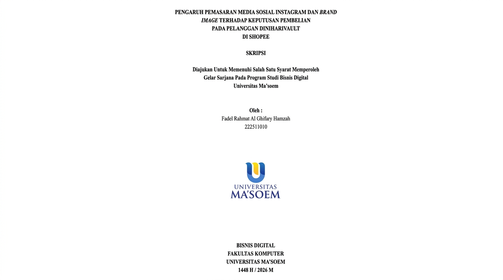
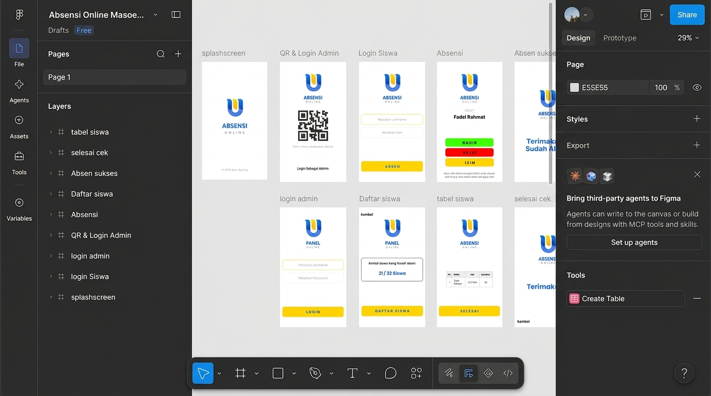
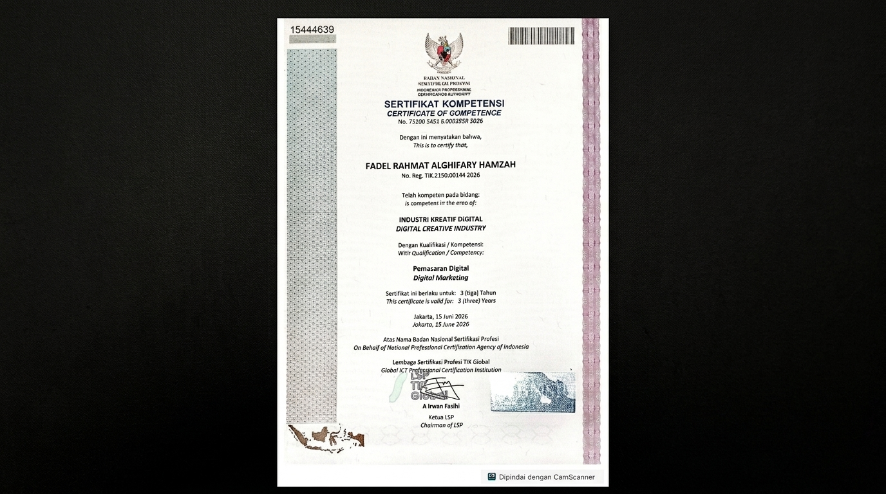
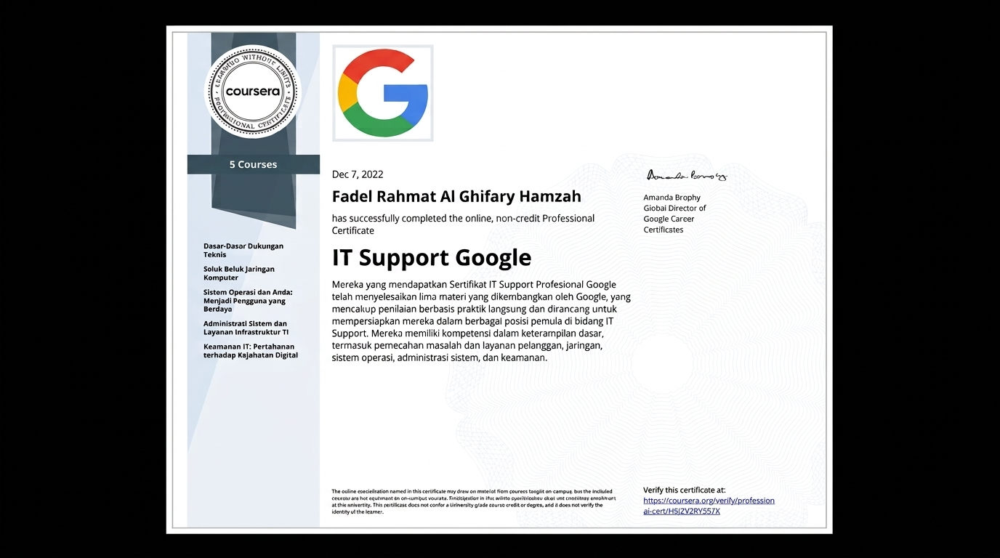

Digital Marketing
Perencanaan strategi pemasaran dan kampanye media sosial yang berorientasi pada tujuan bisnis.
HALO, SAYA
Lulusan S1 Bisnis Digital yang tertarik pada strategi pemasaran digital berbasis data, riset konsumen, optimasi e-commerce, dan pengembangan bisnis.
01 / TENTANG SAYA
Saya Fadel Rahmat Al Ghifary Hamzah, lulusan S1 Bisnis Digital Universitas Ma’soem dengan IPK 3,36/4,00.
Saya memiliki kompetensi dalam riset pasar kuantitatif, perencanaan kampanye periklanan, optimasi penjualan e-commerce khususnya Shopee, serta pengolahan data dan pelaporan.
Melalui proyek akademik, saya mempelajari hubungan konten visual, kredibilitas merek, dan keputusan pembelian. Saya tertarik mendukung strategi pemasaran yang terukur, efisien, dan relevan dengan kebutuhan konsumen.
Riset konsumen, pengolahan data, dan interpretasi hasil.
Kampanye media sosial, perencanaan media, dan optimasi e-commerce.
Dokumentasi, pelaporan, administrasi data, dan dukungan teknis.
02 / KOMPETENSI
Perencanaan strategi pemasaran dan kampanye media sosial yang berorientasi pada tujuan bisnis.
Riset pasar dan konsumen, pengolahan data kuantitatif, serta penyusunan rekomendasi.
Optimasi penjualan marketplace dan pemahaman funnel penjualan digital.
Menyusun mockup antarmuka dan mendukung produksi konten digital.
Mengelola dokumentasi, informasi, dan laporan secara terstruktur.
Dasar troubleshooting, jaringan, sistem operasi, dan kesadaran keamanan digital.
Daftar kompetensi disesuaikan dengan informasi pada CV; tingkat kemahiran tidak diberi persentase karena CV tidak mencantumkan skor kemampuan.
03 / PENGALAMAN
Studi kampanye Instagram Diniharivault dan keputusan pembelian di Shopee
Mockup dan prototipe interaktif menggunakan Figma
Lulus · IPK 3,36 / 4,00
Fokus akademik meliputi analitik bisnis, pemasaran multi-kanal, manajemen operasional digital, dan perilaku konsumen digital.
04 / KARYA PILIHAN

Riset kuantitatif mengenai pengaruh pemasaran media sosial Instagram dan brand image terhadap keputusan pembelian pelanggan Diniharivault di Shopee.

Perancangan arsitektur informasi, wireframe, dan prototipe interaktif untuk alur presensi akademik yang jelas.
Dokumentasi dan tangkapan layar asli dari hasil project.
05 / SERTIFIKASI

LSP TIK Global · BNSP
Status kompeten pada 13 unit kompetensi, termasuk riset audiens, strategi kreatif, naskah iklan, serta pengukuran dan optimasi periklanan digital.

Google / Coursera
Mencakup technical support, computer networking, operating systems, system administration, infrastruktur TI, dan IT security.
06 / KONTAK
Tertarik berdiskusi tentang digital marketing, riset konsumen, atau peluang kolaborasi? Silakan hubungi saya.